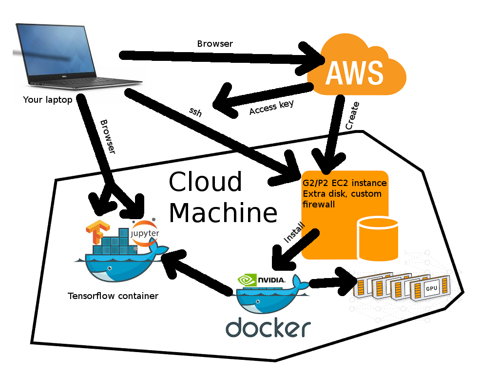

Tensorflow: A Practical Introduction
Alex Coventry
Created: 2016-11-17 Thu 16:32
What is Deep Learning?
- Automatically learning implicit representations from training data.
- Layering increasingly abstract representations on top of each other.

(http://www.iro.umontreal.ca/~bengioy/talks/DL-Tutorial-NIPS2015.pdf)
What is Tensorflow?
- A Python library for Machine Learning which emphasizes Deep Learning models.
- Example.
- A large suite of optimization algorithms and statistical tools.
- Environment-agnostic notation for large classes of ML-related calculations: Same program can run on a single CPU, a cluster, or a GPU, with minor adjustments.
- Tensorflow because many calculations are linear, so represented by tensors (multi-dimensional arrays of numbers.)
- Tensorflow because information flows from one layer to the next (forwards and backwards) via the tensors.
What's the goal of this meetup group?
- Practical demonstrations of how to use Tensorflow for Deep Learning.
- The goal is that you should be able to run the demostrations yourself, and play with them to learn more.
- In the end, we should be able to make our own images like this, among other things. (But not this week.)

Why run your own Tensorflow machine on AWS?
- Costs
- Financial: At least 65c/hour, plus a few dollars a month for storage.
- Time / Complexity: You have to learn a few moving parts, and keep them in sync.
- Benefits
- Main issue is hardware: Serious Tensorflow calculations use GPUs. They are infeasible on standard hardware.
- Flexibility: It's easy to scale up a calculation to make it go faster, once you're confident you're doing the right calculation.
Getting Started With Tensorflow
Don't be intimidated! We'll take it step by step.

Install an ssh client
- Start chrome browser.
- Search for "firessh chrome", and click on first link.
- Click "Add to Chrome"

Log into AWS and create a key
- On aws.amazon.com, click on "Sign In to the Console" in the top right-hand corner.
- From the console, click on EC2 in the top left-hand corner.
- Click on "Key Pairs", under "Network and Security" on the left-hand side.
- Click "Create Key Pair". Give it a name, click "Create".
- Key is downloaded to your local hard drive. Make sure you know where it is.
Create a Tensorflow machine
- From the EC2 console, click "Instances" on the left-hand side, then "Launch Instance."
- Choose "Community AMIs" on the left-hand side, then search for "Coventry Tensorflow" in the search field. Click "Select".
- Type Control-F, then "GPU". Click on "g2.2xlarge" row.
- Click on "Review and Launch", then "Launch."
- Choose the key you created on the last slide, check acknowledgement box, and launch.
Connect to the Tensorflow machine
- Click on the instance id ("i-<alphnumerics>"). In the bottom it will say something like "Public DNS: ec2-…compute-1.amazonaws.com". Take a copy of the "ec2-….amazonaws.com" address.
- In chrome, go to
chrome://appsand choose firessh. (Or use your own ssh client if you prefer.) - Enter anything you like for "Account Name", the DNS address for the "Host", "ubuntu" for the login, and use the "choose file" button to choose the local key file you created two slides ago.
- Click "Connect."
Extra notes
Create a Tensorflow machine from scratch – EC2 instance
- On aws.amazon.com, click on "Sign In to the Console" in the top right-hand corner.
- From the console, click on EC2 in the top left-hand corner.
- Click on "Launch Instance"
- Click on fourth "Select" button on right-hand side, for "Ubuntu Server"
- Type Control-F, then "GPU". Click on "g2.2xlarge" row.
- Click on "Configure Instance Details", then "Add storage". Change size from 8 to 16.
- Click on "Configure Security Group", then "Add Rule."
- Set port to 8888 and source to "Anywhere." (Opens the firewall on port 8888.) Open port 6666 in the same way.
- Click on "Review and Launch", then "Launch."
- Choose the key you created, check acknowledgement box, and launch
Create a Tensorflow machine from scratch – installation
- Connect to the machine as described in the main notes.
Run these commands:
git clone https://github.com/coventry/tfintrocd tfintrosudo bashbash ./install.sh
Create AWS account
(No need to read this if you already have an account)
- Go to aws.amazon.com
- Click on "Create AWS account" in top right-hand corner
- Enter email address, click "I am a new user", click "Sign in"
- Fill out info, click "Create account"
- Fill out info. For "security check", don't include spaces. Click "Check here", click "Create Account"
- Fill out credit card info, click "Continue"
- After another "security check," give a telephone number.
- They'll call your number, enter the given code. Click "Continue"
- Click "Continue" again.
- Click "Sign in to the console."